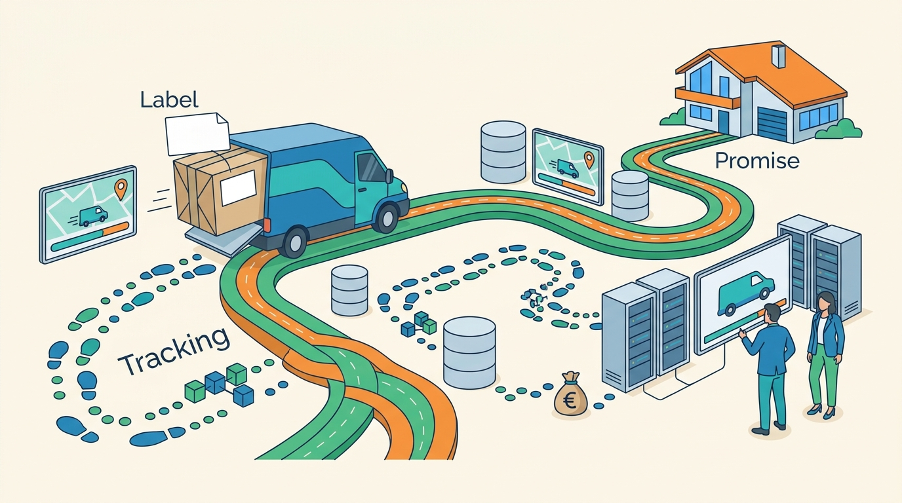

Part IV — FULFILLMENT: From Warehouse to Doorstep and Back
Getting It There: Carriers, Labels, Tracking and the Delivery Promise
AI-assisted: researched and written with Claude Code and Codex; illustrations generated with Gemini and OpenAI image tools. How this works
